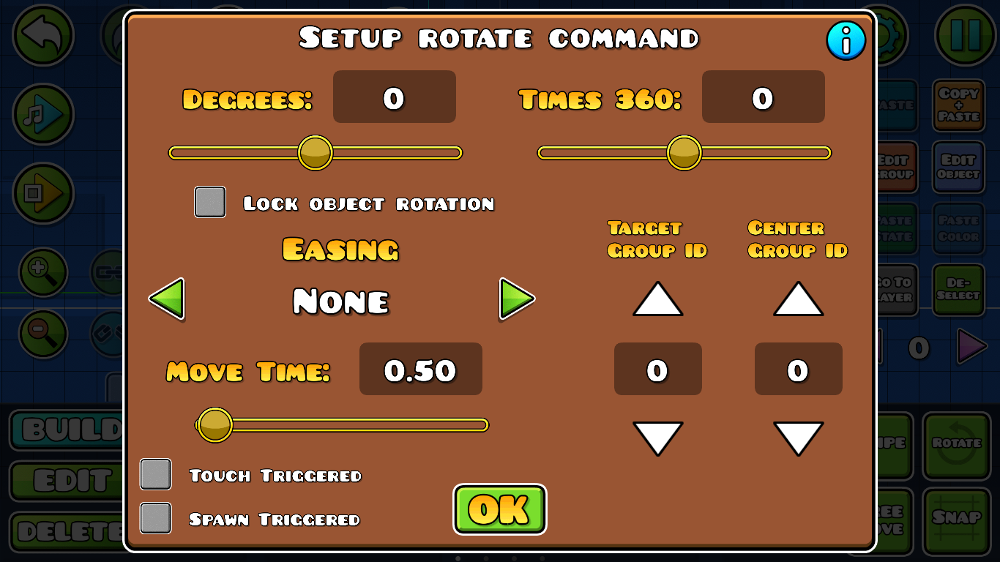
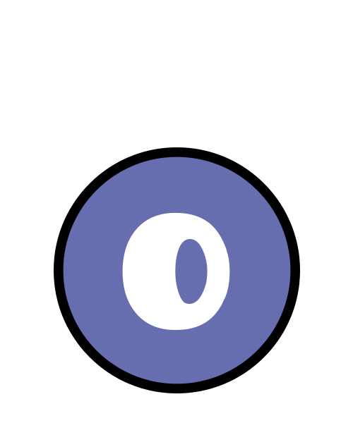

Rotate: Este trigger hace girar objetos (algunos objetos no pueden girar a excepción de que se use un hack externo), desde varios giros de 360 grados hasta unos pocos grados.

Algo importante y que a algunos les habrá pasado, es que solo se puede colocar 1 objeto en el centro (un objeto con el Group ID que corresponda al centro).
Target Group ID: son los objetos que girarán alrededor del centro
Center Group ID: es el objeto que servirá como referencia del centro.
Con la opción "Lock Object Rotation", se bloquea el que las estructuras cambien su ángulo o posición en ella misma, y simplemente se limiten a conservar su forma mientras se desplaza alrededor del centro como se muestra en las imágenes de arriba.
Tutorial recomendado: